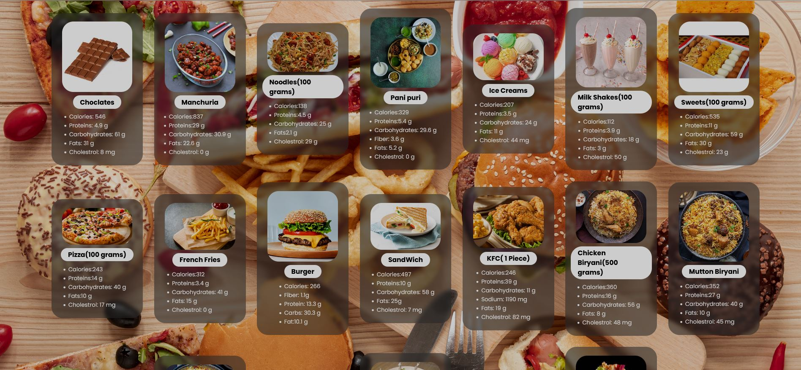
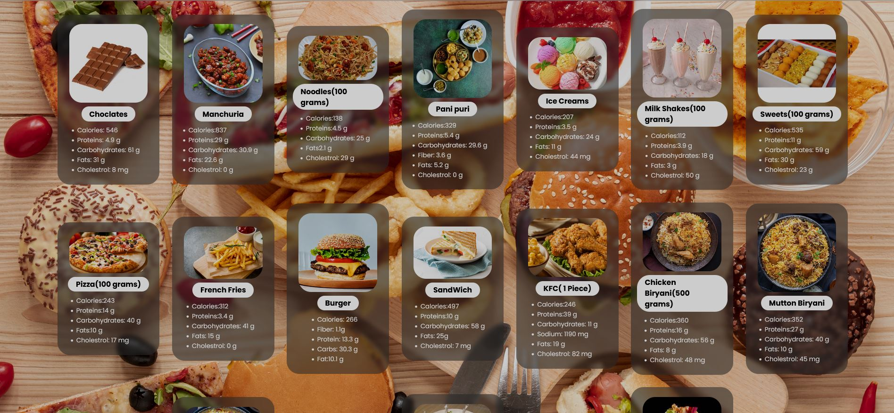

ABOUT
The primary focus of this website would likely be to educate visitors about healthy eating habits, balanced diets, essential nutrients, and their impact on overall well-being. It may offer contents of food and diet plan for fitness. The website might feature expert nutritionists, dietitians, or health professionals who share their knowledge, tips, and advice to help individuals make informed decisions about their diet and lifestyle. They might provide personalized recommendations based on health goals, dietary restrictions, or medical conditions. Interactive tools like meal planners, calorie calculators, and healthy recipe databases could be included to assist users in achieving their health objectives.The website might feature expert nutritionists, dietitians, or health professionals who share their knowledge, tips, and advice to help individuals make informed decisions about their diet and lifestyle. They might provide personalized recommendations based on health goals, dietary restrictions, or medical conditions. Interactive tools like meal planners, calorie calculators, and healthy recipe databases could be included to assist users in achieving their health objectives. Additionally, the website might highlight success stories, testimonials, or case studies to motivate and inspire individuals on their journey to better nutrition and health.


 
